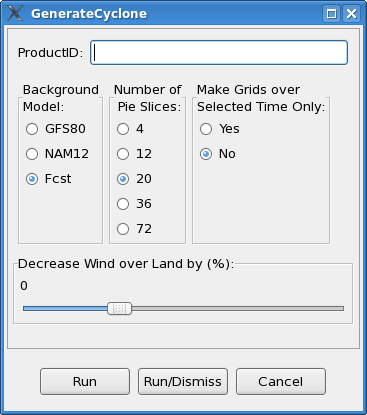

GenerateCyclone
Tool
The GenerateCyclone tool creates wind grids for tropical
depression events. When a cyclone is classified as a tropical
depression, The TCM text bulletin from the Tropical Prediction Center
(TPC) contains only the forecast center and maximum sustained winds;
no wind radii are provided. The Generate Cyclone tools allows
forecasters to add wind radii thus injecting more detail to this wind
forecast so that they can create more realistic wind grids more
easily.
Defining Radii in a
Text File
The GenerateCyclone tool was derived from the TCMWind
tool. To use it, the forecaster must first define the location and
strength of the cyclone as a function of time in a text file. The
format of the file is very similar to the format of the TCM product.
A simple example is shown below...
FORECAST VALID 09/0900Z 25.4N
81.7W
MAX SUSTAINED WINDS 140 KT WITH
GUSTS TO 170 KT.
10 KT......100NE 100SE 100SW 90NW.
20 KT.......90NE 90SE 90SW 90NW.
30 KT.......85NE 85SE 85SW 75NW.
FORECAST VALID 09/1800Z 28.2N 85.8W
MAX WIND 140 KT...GUSTS 170 KT.
10 KT......100NE 100SE 100SW 90NW.
20 KT.......90NE 90SE 90SW 90NW.
30 KT.......85NE 85SE 85SW 75NW.
There are three main parts to the text file: the valid
time and location, max sustained winds, and the radii.
1. Forecast Valid
Time and Location
Example:
FORECAST VALID 09/0900Z
25.4N 81.7W
(valid time) (lat,
lon)
The forecast valid time and location must precede the
radii information. It must contain the phrase “FORECAST VALID”
followed by the time in the format dd/hhmmZ, where dd is the day of
the month, hh is the hour, mm is the minute (this should always be
00), and the Z means that the time is in GMT. The center location of
the storm follow the time and must be in the format “aa.aN bbb.bW”,
where aa.a is the latitude in degrees and tenths north and bbb.b is
the longitude in degrees and tenths west. The “N” and the “W”
are required for proper decoding of the text.
Since the month and year are optional, the tool will
generally create grids containing the cyclone within the current
month. When the tool finishes you may need to scroll the Grid Manager
backward or forward in time to view your grids since they could be
plotted many days before or after the current time window.
2. Max Sustained Winds
Example:
MAX SUSTAINED WINDS 140 KT
WITH
GUSTS TO 170 KT.
(max wind) (gust value is not used)
The Max Sustained Wind line indicates the maximum
sustained winds for the cyclone. It has the format MAX WIND xxx
KT...GUSTS yyy KT, where xxx is the maximum sustained wind and yyy is
the gusts. The maximum sustained wind value and the latitude is used
to calculate a radius of maximum wind (RMW) and is added to the list
of radii. The maximum gust is not used by the tool.
3. Wind Radii
Example:
10 KT......100NE 100SE 100SW
90NW.
(wind value) ...(radii in each direction in nautical
miles)
The wind radii actually define the wind radii values for
a specified wind speed. It has the following format: NN
KT.......aNE bSE cSW dNW, where NN is the wind speed value in knots
and a, b, c, and d are the values of the radii for the northeast,
southeast, southwest, and northwest quadrants, respectively, all
expressed in nautical miles. All quadrants must be listed and all
must use the standard NE, SE, SW, NW indicators for each quadrant for
the tool to work properly.
Note that unlike the TCM bulletins, you can add any wind
value you want not just 34, 50, and 64 KT, and you may enter as many
wind values as you like. However, for best results, carry the same
wind values through to the end of the forecast. For example, if you
define a 25 knot radius in the first forecast period, define a 25
knot radius for the rest of the forecast periods as well. The code
that performs the interpolation works much better when the same wind
speed values are used throughout the forecast period.
Preparing to run the tool
Before the tool can be successfully executed, the text
file containing all of the information about the cyclone must be
prepared. It's recommended that a template be stored in the text
database under some product that will never be transmitted. Forecasters
will edit this template, perhaps copying in the current
TCM, add radii to some of the forecaster periods, and save the file
under a different text database product name. This new name should
be used when running the GenerateCyclone tool.
Additional data from TPC
The Tropical Prediction Center produces additional data
that more precisely predicts the radius of maximum wind and the
outermost closed isobar. The GenerateCyclone tool can ingest this
this data which will generally improve the quality of the wind grids
that it produces. However, in order to download the data from
the TPC web site, you must configure and run a set of scripts before
running the GenerateCyclone tool. These scripts download the data
for you and place it in the AWIPS text database. Once stored in the
database, the tool will automatically read the additional data and
use it as part of the algorithm that generates the cyclone wind data.
Please see the appendix on page 6 for detailed information on how to
set up and run these scripts.
Once the scripts are set up, forecasters should follow these steps:
- Run the script that downloads the additional data from TPC and
store the data in a file.
- Run another script to read the file and store its contents in
the AWIPS text database under a PIL identified by the basin, cyclone
number, and year
- Run the GenerateCyclone tool and enter the PIL for the current
cyclone. The tool will automatically read the additional data from TPC
using the AWIPS text database and use the data when generating the wind
grids.
Running the tool
The GenerateCyclone tool is invoked from the GFE by
selecting from the main menu bar: Populate->GenerateCyclone. A
GUI menu displays immediately and looks like the figure below.

The menu allows the forecaster to enter the following
information:
- Product ID – the identifier of the text product under which the
forecaster-defined bulletin was stored.
- Background
Model – the background that should be used for the
grid. This model/forecast dataset will be used as the background and
blended with the cyclone starting at the outer edge. A time-matching
algorithm selects the background grid whose start time matches most
closely in time with the start time of the cyclone grid.
- Number of
Pie Slices – the number of radial pieces that will
be generated by the tool. More pie slices will generate a smoother wind
grid, particularly in quadrants where the radii vary greatly. The
execution time of the tool increases as pie slices increases. For
example, doubling the number of slices will approximately double the
tool's execution time.
- Make Grids
over Selected Time Only – Users should select “Yes”
if they want the tool to run over a shorter time period than defined in
the text bulletin. Wind grids will be generated over the grid manager
selected time range only. Leaving the option set to “No” will allow the
tool to run over the full time period defined in the bulletin.
De-selecting the grid manager time range has the same effect as
selecting “No”.
- Decrease
Wind over Land (%) - The tool will automatically
decrease the wind speed by this percentage where the elevation is
greater than zero (above sea level). All areas above sea level are
adjusted by the same percentage. Users may move the slider to the right
to increase this value and to the left to decrease it. Note that the
range of the slider is -20 to +50. Negative values will increase the
wind speeds for any area above sea level.
APPENDIX
INSTRUCTIONS TO DOWNLOAD AND STORE ADDITIONAL CYCLONE
DATA
The following instructions list the steps required to
download additional data from TPC and store it in the AWIPS text
database. All files are included with the distribution tar file that
came with the GenerateCyclone tool.
Assumptions: User fxa in ds1 can ssh into ls1 as LDAD
with no password
prompting. If it can't, see your ITO or AWIPS Focal
Point. Also, these
scripts are needed to run the GenerateCyclone Procedure
to populate
your wind grids with TPC TCM guidance for tropical
depressions where
no wind radii is provided.
1) Edit the .csh and .pl scripts to edit your local
choice for the
ldir (AWIPS Local directory where scripts reside inside
AWIPS) and
rdir (LDAD Local Directory where ftp script will reside)
variables. Place all the scripts in the tar package in
the AWIPS
directory (ldir).
2) Place ftp script in the LDAD working directory
(rdir).
3) Add the following entries to your trigger table in
ds1 substituting your office ID:
MIATCMAT1 /your/awips/local/dir/tcm_2ndfile.csh
MIATCMAT1
(/your/awips/local/dir same as ldir). MIATCMAT2
/your/awips/local/dir/tcm_2ndfile.csh MIATCMAT2
MIATCMAT3
/your/awips/local/dir/tcm_2ndfile.csh MIATCMAT3
MIATCMAT4
/your/awips/local/dir/tcm_2ndfile.csh MIATCMAT4
MIATCMAT5
/your/awips/local/dir/tcm_2ndfile.csh MIATCMAT5
Localize ds1 triggers (mainScript.csh -trigger) as fxa.
4) When the TCMs are stored in the database, the script
tcm_2ndfile.csh call its companion perl script. This
script decodes
from the TCM the storm number and year (AL##YYYY), where
AL stands for
atlantic, ## for storm number, and YYYY year). This
information is
used by the perl script to remotely run as ldad the ftp
script in
ldad. The ftp script downloads from TPC ftp directory
the atcf file
corresponding to the TCM triggering the script. In the
case of
tropical depressions where no wind radii information is
contained in
the TCM, this atcf file contains the necessary
circulation information
needed by the GFE GenerateCyclone Procedure to create a
depression in
the wind grids.
5) Example: If AL##YYYY in the TCM file is AL102004,
then the
corresponding atcf file is stored in the AWIPS text
database as
AL102004. When you run the GenerateCyclone Procedure in
GFE, you will
enter the 9 letter PIL for the TCM and AL102004 will be
pulled from
the text database provided you have set up these
scripts. The
procedure will call both products from the text
database, decode them,
and generate the depression circulation in the grids.